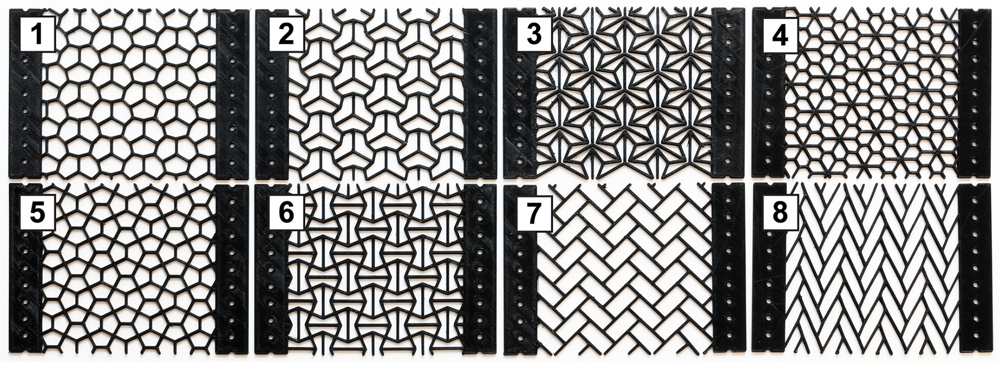
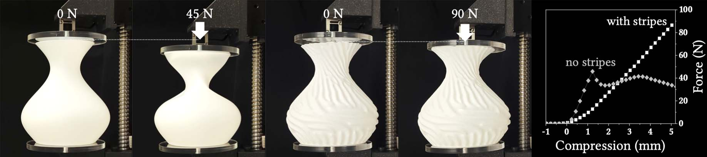
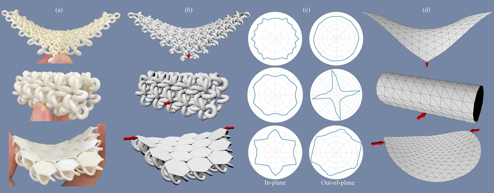
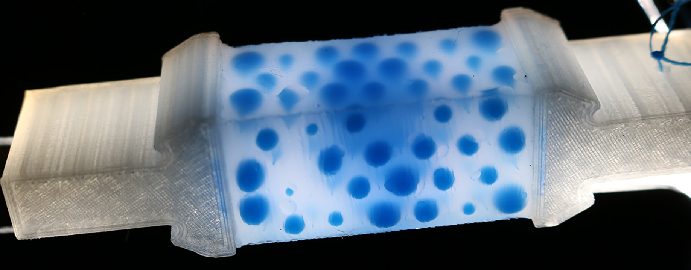

Structured Materials
Structured materials exhibit extraordinary mechanical properties, enabling applications in robotics, architecture, and many fields of engineering. Our research focuses on computational modeling, characterization, and inverse design of these materials to achieve tunable stiffness. By integrating physics-based simulation with machine learning and optimization, we develop predictive tools that reveal emergent behaviors and guide the creation of novel structures.
Scaled Sheet Materials

We present a computational approach for modeling the mechanical behavior of flexible scaled sheet materials — 3D-printed hard scales embedded in a soft substrate. Balancing strength and flexibility, these structured materials find applications in protective gear, soft robotics, and 3D-printed fashion. To unlock their full potential, however, we must unravel the complex relation between scale pattern and mechanical properties. To address this problem, we propose a contact-aware homogenization approach that distills native-level simulation data into a novel macromechanical model. This macro-model combines piecewise-quadratic uniaxial fits with polar interpolation using circular harmonics, allowing for efficient simulation of large-scale patterns. We apply our approach to explore the space of isohedral scale patterns, revealing a diverse range of anisotropic and nonlinear material behaviors. Through an extensive set of experiments, we show that our models reproduce various scale-level effects while offering good qualitative agreement with physical prototypes on the macro-level.
Structured Sheet Materials

Mechanical Characterization of Structured Sheet Materials
Christian Schumacher, Steve Marschner, Markus Gross, Bernhard Thomaszewski
ACM Transactions on Graphics (Proc. ACM SIGGRAPH 2018)
PDFVideoProject
Bi-Material Design with Differentiable Stripe Patterns

Differentiable Stripe Patterns for Inverse Design of Structured Surfaces
Juan Montes, Yinwei Du, Ronan Hinchet, Stelian Coros, Bernhard Thomaszewski
ACM Transactions on Graphics (Proc. ACM SIGGRAPH 2023)
PDF
Discrete Interlocking Materials

Beyond Chainmail: Computational Modeling of Discrete Interlocking Materials
Pengbin Tang, Stelian Coros, Bernhard Thomaszewski
ACM Transactions on Graphics (Proc. ACM SIGGRAPH 2023)
PDFVideoProject
Structured Silicone

MetaSilicone: Design and Fabrication of Composite Silicone with Desired Mechanical Properties
Jonas Zehnder, Espen Knoop, Moritz Bächer, Bernhard Thomaszewski
ACM Transactions on Graphics (Proc. ACM SIGGRAPH Asia 2017)
PDFVideoProject